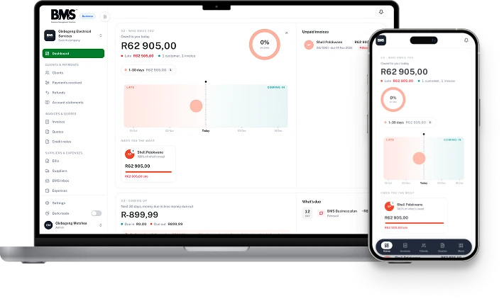
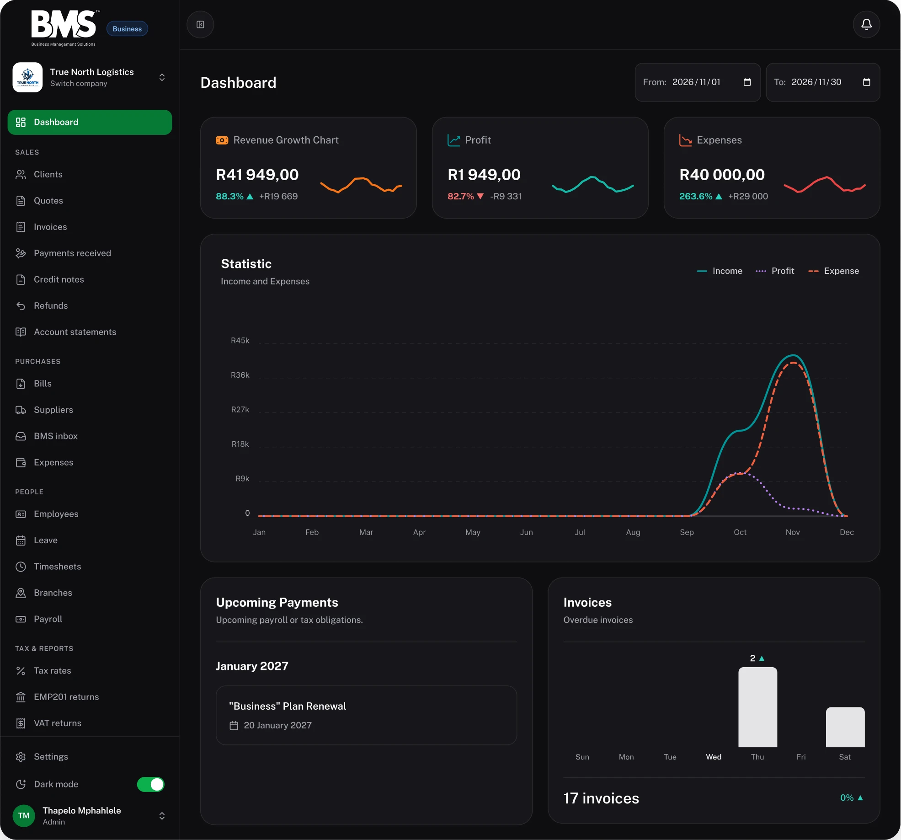
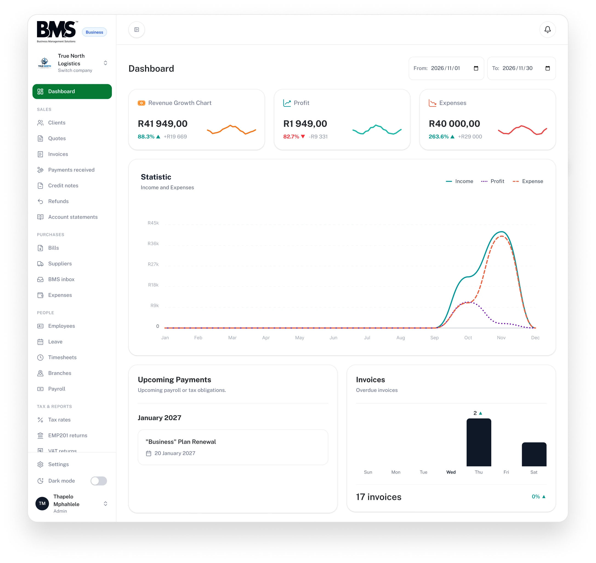
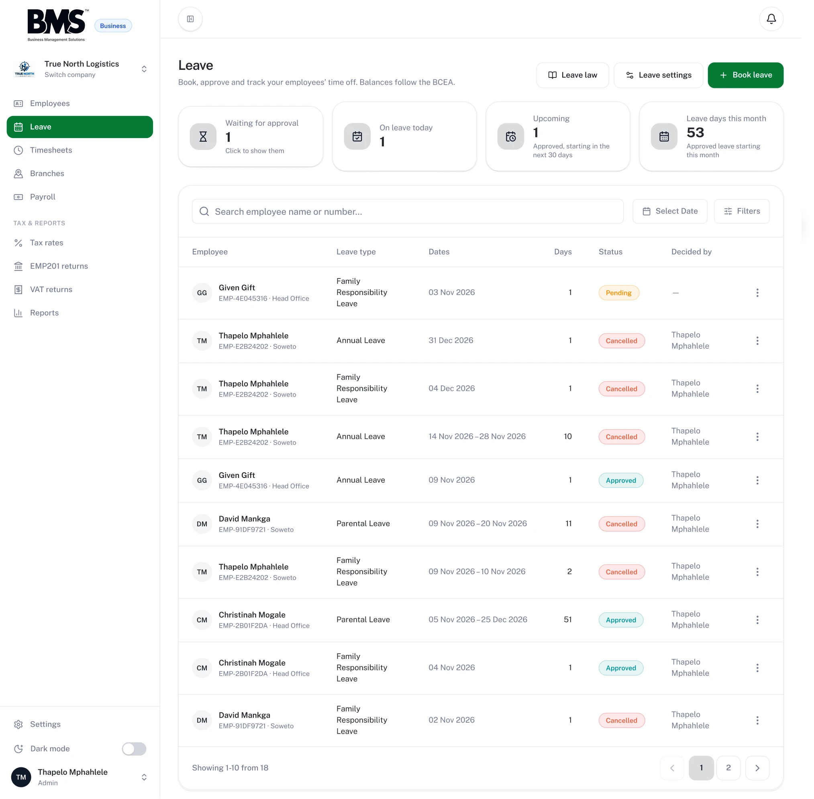
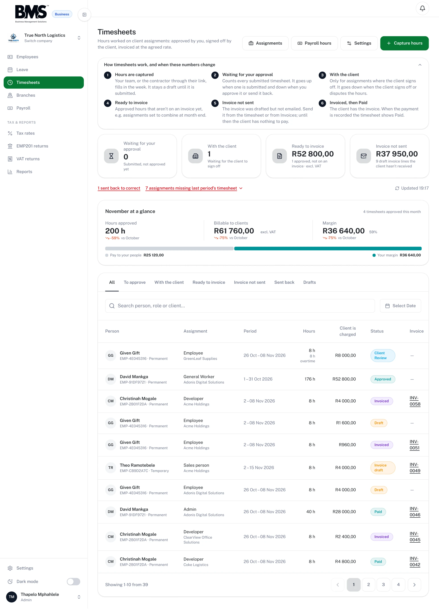
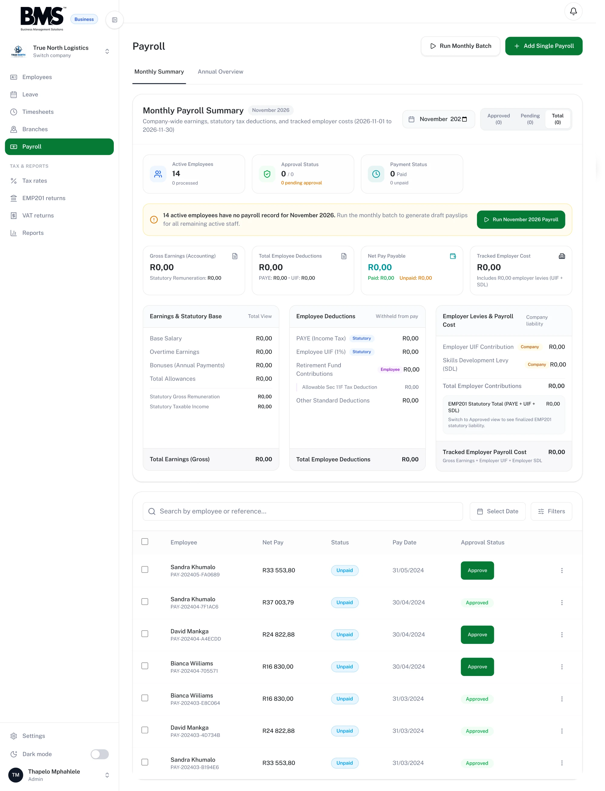
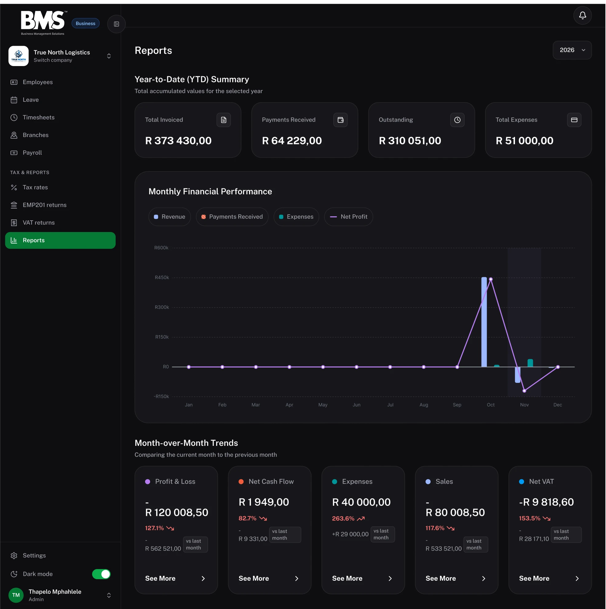
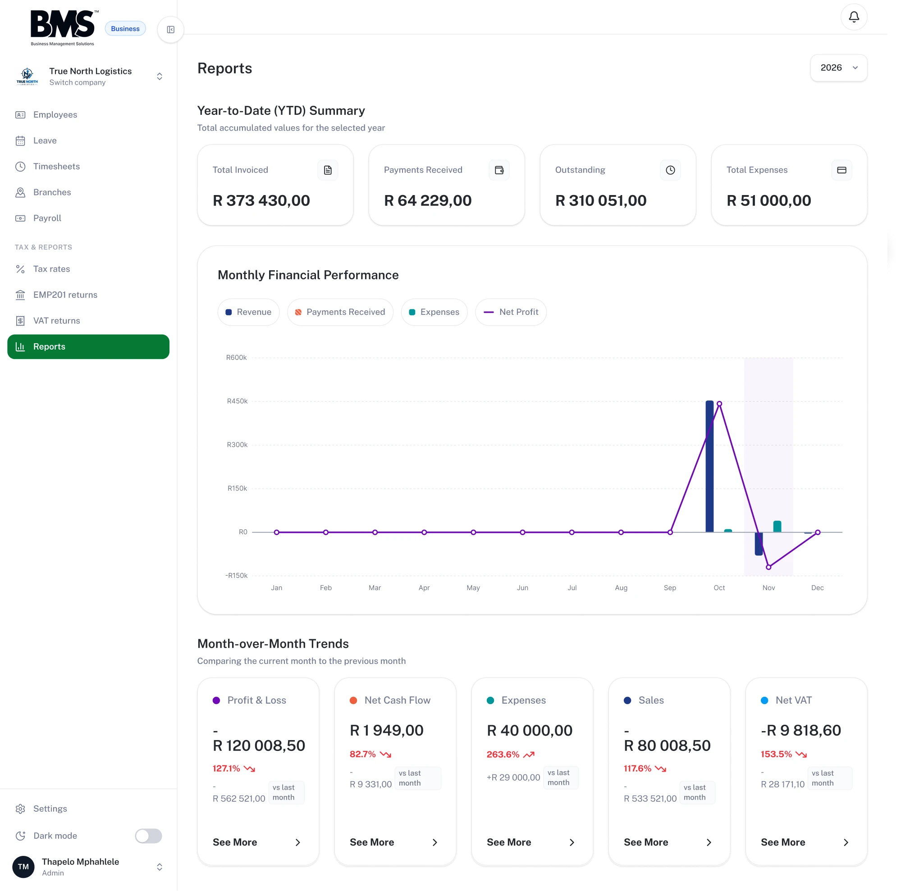

BMS · Case study
Business management software
Overview
BMS brings everyday business operations into one web application. Teams can manage clients, prepare quotes, send invoices, record time and leave, run payroll, and review financial performance.
- Role
- Product designer
- Scope
- Business operations and finance
- Platform
- Web
Finance
Business dashboard
The dashboard gives teams a quick view of revenue, profit, and expenses. It also surfaces upcoming payments and invoice activity so they can see what needs attention.


People
Leave management
Managers can review leave requests and track their status. The summary shows who is off today and which requests still need a decision.


Time tracking
Timesheets
Teams can log hours against assignments and see which entries are awaiting approval. The timesheet overview shows recorded hours, billable amounts, and work ready to invoice.


People and finance
Payroll
The monthly payroll view brings employee earnings, deductions, employer contributions, and net pay together. Teams can review individual amounts and approval status before running payroll.


Finance
Financial reports
The reports view summarises year-to-date invoicing, payments received, outstanding balances, and expenses. Trend charts help teams compare financial performance month to month.


Outcome
One place to run the business
Client records, quotes, and invoices sit alongside the work that generates them. Teams can track hours, review payroll, and see how the business is performing from the same application.